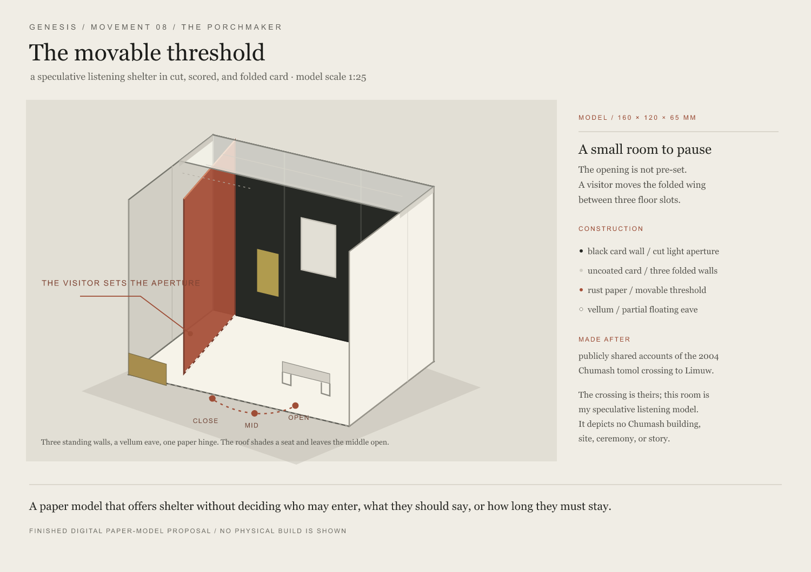
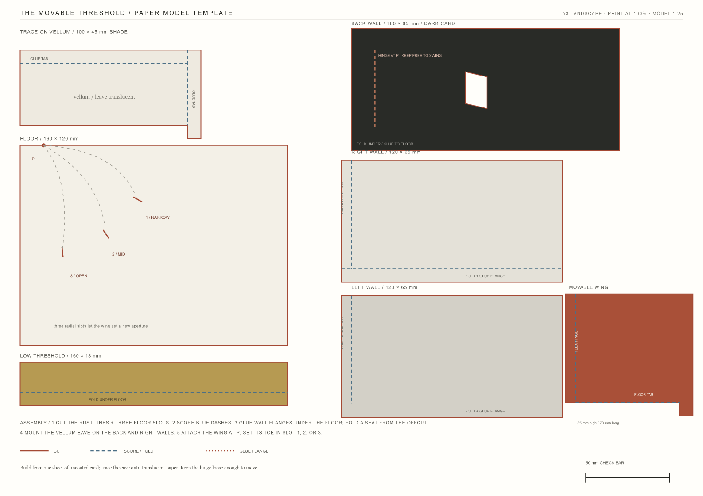

The movable threshold
A small room to pause, with an opening its visitor can set.

The hand sets the opening.
A folded wing can sit in one of three floor slots, changing the width and direction of entry. A cut aperture catches light in the dark wall; a translucent eave shades only part of the room, leaving the center open.
The work asks whether shelter can be offered without deciding how a person enters, speaks, or stays.
This is a speculative response to publicly shared accounts of the 2004 Chumash tomol crossing to Swaxil on Limuw. It depicts no Chumash dwelling, place, story, or ceremony, and speaks for no community. The crossing and its accounts remain with the people who made and shared them.
The image is a vector rendering, not a photograph. No paper prototype has been cut or assembled; the wing, hinge, slots, and eave have not been tested in use.

A room in one sheet.
The template lays out the floor, wall panels, three wing positions, and separate eave. It is an invitation to test the paper, not a claim that the mechanism has already been proven.
Print at 100% / Actual size and check the 50 mm bar before cutting. The eave is traced onto translucent paper; the rest is designed for uncoated card.
Download the SVG template View the template